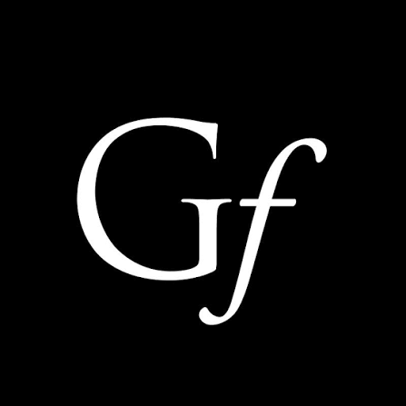

I've been a grad student advised by Richard Anderson in the ICTD Lab at UW since 2020. View my dissertation here!
I first came to UW through an NSF-funded REU in undergrad where I worked with Linda Shapiro on AI-enabled melanoma detection.
I interned at MSR India with Mohit Jain, Bill Thies & Sunayana Sitaraman, working on applications at the intersection of LLMs and health for low resource settings. Our work includes the design of LLM-enabled treatment bots, voice based, ambient electronic health records, as well as LLM evaluation in Indic language medical speech.

I consulted for MNCNH D & T led by Amanda Schwartz and Ari Moscowitz, working on the AI-enabled handheld ultrasound portfolio. I learned so much about productizing interventions end to end.
I was super lucky to start my full-time career at the Lincoln Lab under the supervision of Allan Wollaber. We thought about some of the US government's challenges at the intersection of AI and computer networks as well as AI and health.
I interned on a team that reengineered a biased proprietary DNA analysis algorithm that was being used to determine criminal guilt in New York. The team's work led to the use of this tool being stopped across the state!

During my undergrad tenure as a scholarship recipient at NYU, I worked several jobs including being an admin aide at the Dean's office, a Graph Theory course co-instructor for high school students, a College Leader that supported 30 incoming freshman, and a TA for Data Structures.